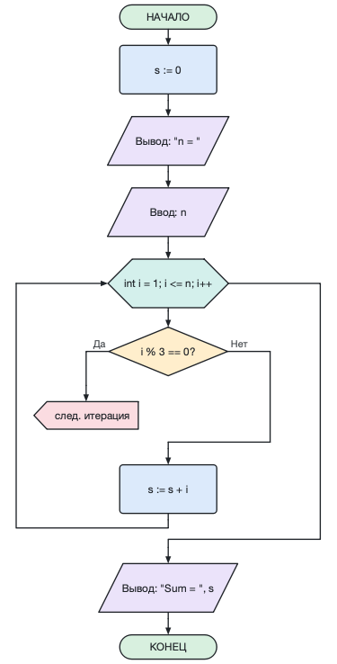

Команда Файл → Импорт из исходного кода (Ctrl+I) открывает окно, в которое можно вставить код на C или C++ или открыть файл (.c, .cpp, .h ...). Файл можно также просто перетащить в окно программы.
Справа сразу показывается блок-схема выбранной функции. Кнопка Импортировать открывает её в новой вкладке, Импортировать все функции — каждую функцию в своей вкладке.
Распознаются: if/else, switch, while, do-while, for (в том числе range-for), return, break, continue, присваивания, ввод/вывод (scanf, printf, puts, gets, cin, cout, getline), вызовы функций. Функции ищутся и внутри классов и пространств имён.
Параметры импорта: вид циклов for (блок в стиле C, цикл «пока» или цикл со счётчиком), сохранение объявлений переменных, распознавание ввода/вывода, вызовы как блоки подпрограмм, раскрытие составных присваиваний (x += 2 → x := x + 2).
То, что нельзя показать на блок-схеме (goto, обработчики исключений, директивы препроцессора), перечисляется в списке сообщений; двойной щелчок по сообщению показывает строку кода.
Из командной строки: afce --import prog.c --function main или afce-cli import prog.c --output prog.afc.
